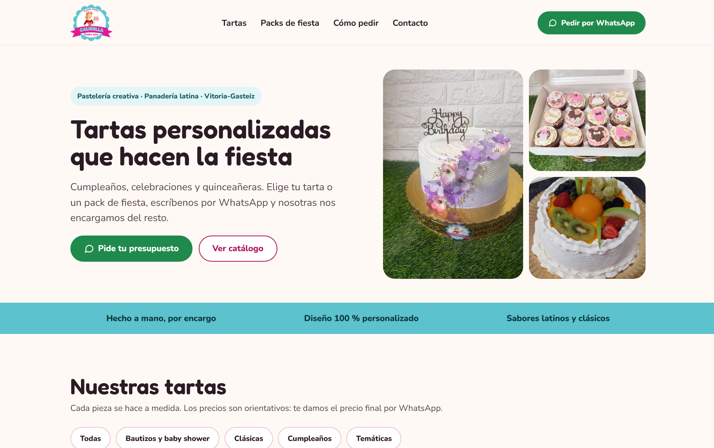
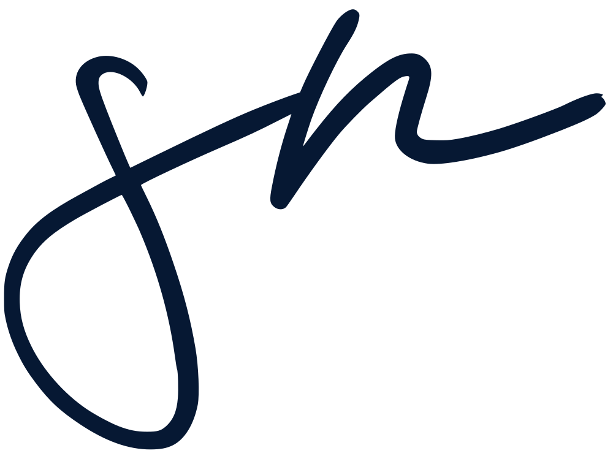
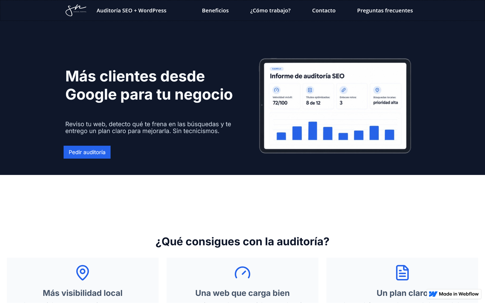

Calibella
Catálogo online para Calibella, pastelería de Vitoria-Gasteiz. Diseñé y desarrollé en WordPress una web que presenta sus productos y lleva a los clientes a pedir por WhatsApp o por teléfono.
- WordPress
- PHP
- CSS
Desarrollador Front-end y WordPress
Tecnología para la comunicación digital


Catálogo online para Calibella, pastelería de Vitoria-Gasteiz. Diseñé y desarrollé en WordPress una web que presenta sus productos y lleva a los clientes a pedir por WhatsApp o por teléfono.

Landing page para ofrecer auditorías SEO y webs en WordPress a pymes de Miranda de Ebro y Vitoria-Gasteiz. La maqueté en Webflow con una estructura pensada para convertir visitas en contactos.
Durante más de seis años trabajé en comunicación digital, coordinación de proyectos y producción audiovisual. Ahí aprendí a pensar en el público, a contar historias y a cumplir plazos.
Hoy llevo esa experiencia al desarrollo web. Me formo como desarrollador full stack en Conquerblocks y construyo proyectos reales con HTML, CSS, JavaScript y WordPress.
Mi objetivo: crear webs que no solo funcionen, sino que comuniquen bien.
¿Tienes un proyecto o una vacante? Escríbeme.